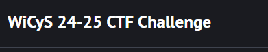

<html lang="en"></html>
    <head>
        <meta charset="UTF-8">
        <meta name="viewport" content="width=device-width, initial-scale=1.0">
        <title>My First CTF!</title>
    </head>
    <body>
        <h1>My First CTF!</h1>
        <h2>This page is all about my experience participating in my first Capture the Flag (CTF) competition. It was an amazing learning experience!</h2>
        
     

        <h2>Preparation</h2>
        <h2>Here's how I prepared for the CTF challenge. </h2>
        <p style="font-size: 20px;">I read the instructions, used Kali on virtual machine that I already have setup. 
            Then whenever I got stuck in a challenge, I researched what type of tools I could use.</p>
            <p style="font-size: 20px;"> There is not a lot that I can share, but I can briefly share my experience.</p>
            <p style="font-size: 20px;">The event lasted three days and luckily I could go to work then come home early to continue the challenge. 
                I even stayed up late trying to figure out some of the challenges.</p>
            <p style="font-size: 20px;"> I used Wireshark to analyze network traffic and detect any malicious activity that occurred.</p> 
            <p style="font-size: 20px;"> There was also a site redirect that I had to analyze.</p>
            <p style="font-size: 20px;"> My favorite was brute force to find out a password. I used tools such as John the Ripper.</p>
            <p style="font-size: 20px;"> Finally, there were different type of encryption such as Vernom Cipher. I just had to find a way to decrypt and find the hidden message.</p>
        
        

        <h3>
         <p>
            Out of about 3000 participant I finished 483rd and completed 25 challenges out of 55. Not bad for my first CTF.</p>
             
        </h3>
        
        <h2> I want to thank  <a href="https://www.wicys.org/" target="_blank" rel="noopener noreferrer">WiCyS</a>  for the experience.
        </h2> 
        <a href="/Home/journeys/Myjourney.html" style="display: inline-block; font-size: 20px; padding: 10px 20px; background-color: #2980b9; color:white; text-decoration: none; border-radius: 5px; transition: 0.">Back to my journey</a>  
    </body>
</html>

<style>
    body {
    font-family: Univers bold;
    line-height: 1.6;
    text-align: center;
    margin: 0;
    padding: 20px;
    background-color: #050505; /* changes the background color. */
    color: rgb(235, 216, 230);  /* changes the body font color. */
}

header {
    margin-bottom: 30px;
    text-align: center;
    padding: 20px;
    background-color: #4CAF50;
    color: rgb(215, 220, 221);
}

header h1 {
    margin: 30px;
    font-size: 2em;
}

nav ul {
    list-style-type: none;
    padding: 0;
    margin: 0;
    display: flex;
    justify-content: center;
}

nav ul li {
    margin: 0 15px;
}

nav ul li a {
    color: white;
    text-decoration: none;
    font-weight: bold;
}

main {
    margin-top: 20px;
}

section h2 {
    /* border-bottom: 2px solid #ddd; */ /* removed this line */
    padding-bottom: 10px;
    margin-bottom: 20px;
    font-size: 2em;
}
</style>